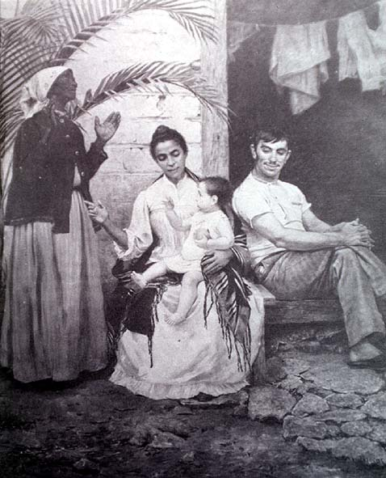

| The African other |
|  |
| Modesto Brocos y Gomez, The Redemption of Cam |
Lacerda's speech was eventually published with a cover illustrated by Spanish-born Brazilian painter Modesto Brocos y Gomez's painting The Redemption of Cam, which illustrated its main hypothesis, as expressed in the subtitle: "The negro turning white, in the third generation, as an effect of racial mixture". According to this theory, the "superior" qualities of "white blood" would eventually prevail over the "inferior" components, whilst at the same time absorbing their contributions: the agility of "the Indian", and the strength and endurance of "the African". Thus, in a rather peculiar twist on Darwinism's hypothesis of natural selection and the survival of the fittest, Brazilian anthropologists could presage a bountiful future for their nation precisely because of its "racial" diversity since, whereas the "inferior" parts of the national body were bound to become extinct, they nonetheless had something to contribute to a people that would end up being "more perfect" than its European ancestors.
In fact, Brocos y Gomez's painting nonetheless also contains a darker, more complex message, despite its declamatory visual rhetoric. In the pietà-like central figure of the child whose gaze follows the mother's finger, pointing towards the dark-skinned grandmother who is looking upward, as if thanking the heavens for the gift of the (white) infant, what is also pointed at is the legacy of slavery and its oblivion soon after it was officially abolished in 1888. Meanwhile, the clearly established hierarchy of gender (the white child is fathered by a Portuguese man with a mulatto woman) also reveals, even as it explicitly denies it, the social and sexual violence beneath the concept of "miscigenation".